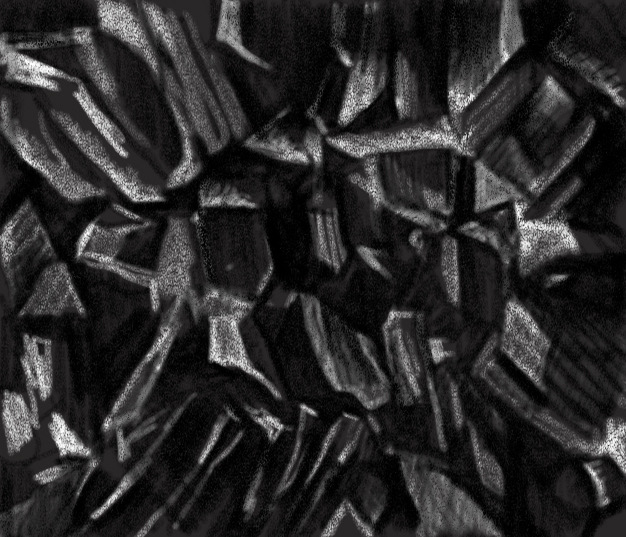
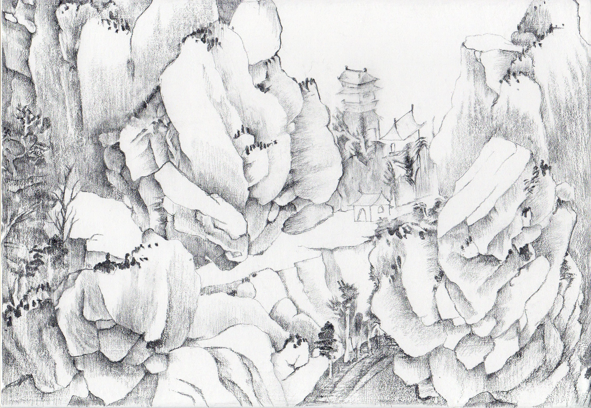
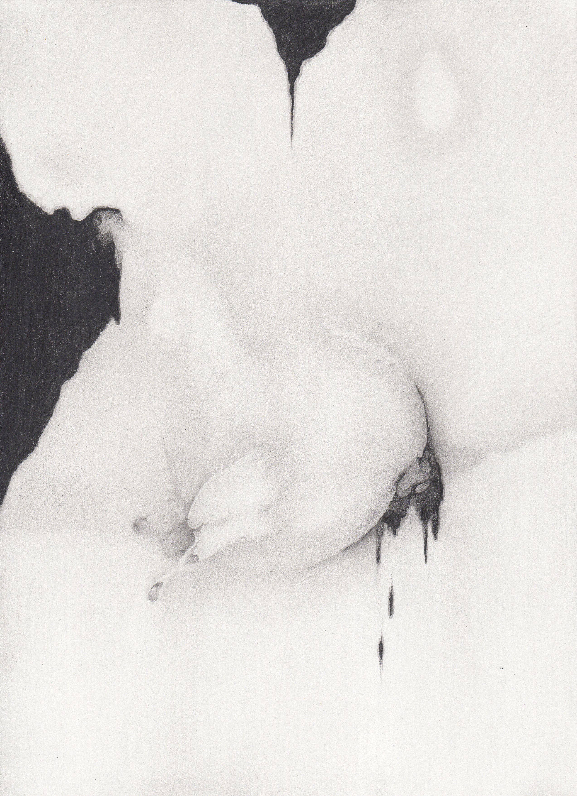
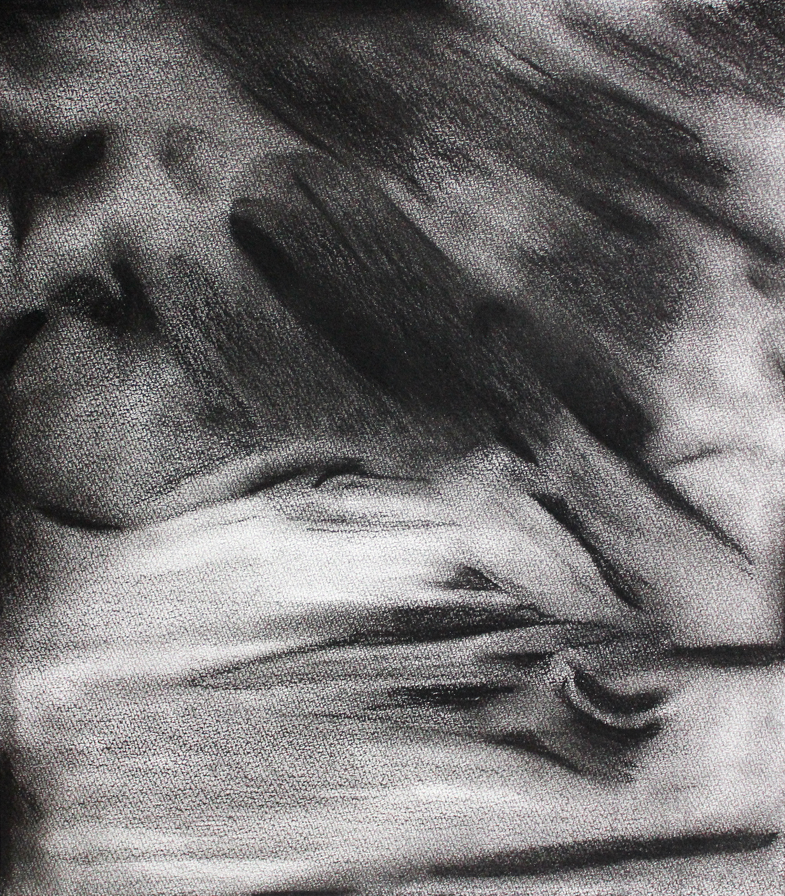
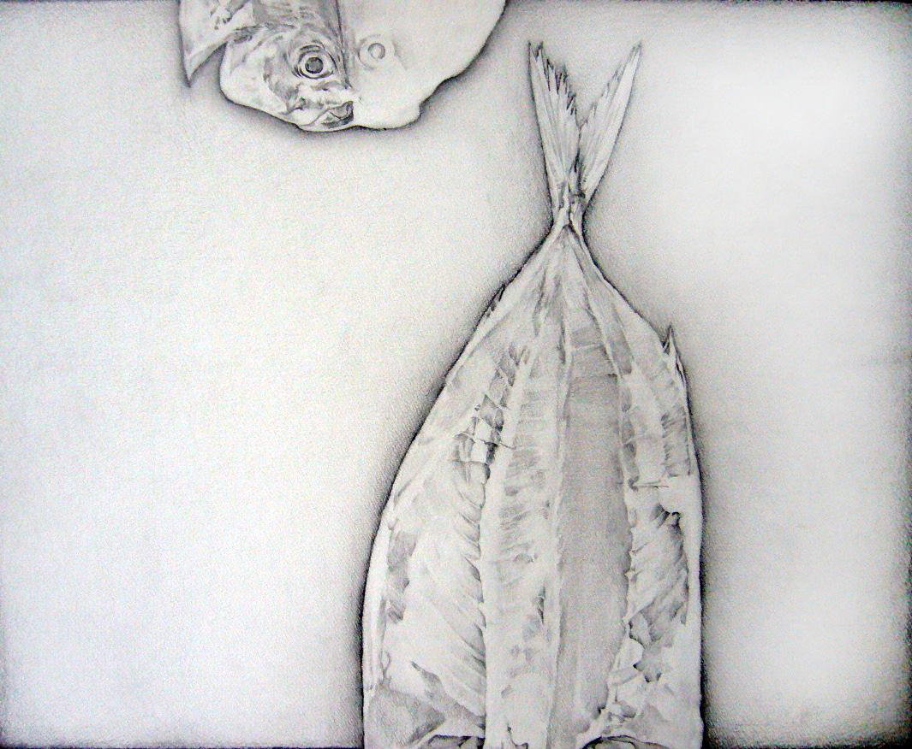
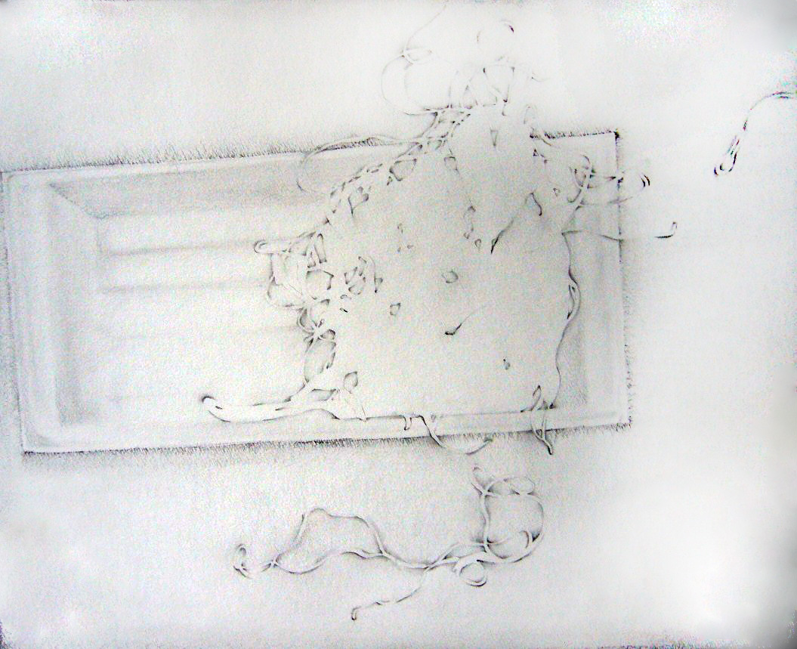

岩間
デジタル
湘南の海岸に露出した岩の"間"を描いた素描である。隆起し、亀裂し、風化した岩の表面は、地層の時間を可視化する。炭素の塊、岩の記録と出会うとき、そこには有機と無機、生と死の境界を問うための「力の場」が生まれる。
角ばった断面と、そのあいだに走る白い光のような線は、岩の地質学的な裂け目でありながら、同時に「いと」——それ以上還元できない存在の最小単位——の形象として読むことができる。この素描はサイト特有の感覚の移植の試みでもある。
解説：左美都研究会、水澤井縄
《素描》とは、線によって世界の輪郭をなぞり、形が立ち現れる以前の瞬間を捉えようとする行為である。絵画における油彩が〈脱領土化〉と〈再領土化〉の往還であるとすれば、素描はその手前——素材がまだ流動的であり、意味が固定される直前——に宿る「未決定の運動」を記録するものに他ならない。
津田の素描は、完成作のための準備稿ではない。それは独立した思考の痕跡であり、鉛筆や木炭の線が紙の繊維と摩擦するその瞬間、〈いと〉が最も剥き出しの状態で析出される場である。線は対象を描くのではなく、対象と描き手のあいだに生じる「力の場」そのものを可視化する。
《Cell-Graphics》シリーズや《岩間》に代表されるように、細胞的・地質的・神話的なイメージが素描の中で重なり合う。ミクロとマクロ、有機と無機、生と死の境界が曖昧になるそこでは、長野・左美都の地層が持つ記憶——土と岩の中に刻まれた時間——が、紙の表面へと移植されていく。
Swipe or Click to Select







】 加工後.jpg)

 [apocalypse] - III】 - 修正後ー.jpg)
Click active center image to view
SELECTED WORKS CHRONOLOGY
デジタル
湘南の海岸に露出した岩の"間"を描いた素描である。隆起し、亀裂し、風化した岩の表面は、地層の時間を可視化する。炭素の塊、岩の記録と出会うとき、そこには有機と無機、生と死の境界を問うための「力の場」が生まれる。
角ばった断面と、そのあいだに走る白い光のような線は、岩の地質学的な裂け目でありながら、同時に「いと」——それ以上還元できない存在の最小単位——の形象として読むことができる。この素描はサイト特有の感覚の移植の試みでもある。
木炭・鉛筆・紙
紙を削り取るかのような荒々しい木炭と鉛筆のストローク、そして吸い込まれるように深い陰影。描かれている形が「具体的な名前や意味」を持つ直前の、描画材と紙との物理的な激しい摩擦、その純粋なエネルギーの痕跡が生々しく定着されている。
作家の息遣いや身体の躍動がそのまま伝わってくるような、圧倒的な熱量を持つドローイング作品。
鉛筆・紙
「水晶体嚢外摘出術（白内障の手術）」という極めて医学的で冷徹なプロセスをタイトルに冠しつつ、有機的な形態が抽出・分離されていく瞬間を緻密な鉛筆の線で捉えきった異色の作品。
肉体という不可侵の領域にメスが入る生々しさと、グラフィックとしての息を呑むような静謐さが同居しており、生命の神秘と危うさを同時に感じさせる。
鉛筆・紙
流出する体液や垂れ下がる肉塊、あるいは増殖する粘菌を思わせる有機的なフォルム。重力と物質の境界線を曖昧にするような不穏なエネルギーが、徹底的に抑制されたモノクロームの階調の中に見事に描き出されている。
名前のつかない「なにか」が蠢くような気配があり、不気味でありながらもどこか目を離せない美しさを放つ。
鉛筆・パネル
古典的な「山水画」の構図を大胆に援用しつつ、荒々しい鉛筆のストロークのみで岩肌のテクスチャと空間の広がりを再構築した風景の素描。
現実の山をそのまま写生したのではなく、記憶や概念の中に存在する「山」という形を、紙の上で再構築（アレンジメント）する試みである。重厚な存在感とミニマルな美しさが同居し、見る者を架空の自然へと誘い込む魅力を持つ。
鉛筆・紙
穏やかな「湖」を連想させるタイトルとは裏腹に、水面の静寂とデジタルノイズのようなバグ（崩壊）が同居する異色作。
滑らかなグラデーションのなかに突如として現れるノイズ的表現は、現代の情報社会における記憶の欠落やバグをアナログな鉛筆の摩擦によって紙に焼き付けたかのよう。静けさの中にひっそりと潜む狂気が、見る者の視線を強く引き込んで離さない。
鉛筆・紙
器の中で複雑に絡み合う「冷麺」をモチーフにしながら、そこから有機的で抽象的なパターンを抽出した意欲作。
日常的な食事の風景が、鉛筆の緻密なストロークによってミクロな細胞のうごめきや、得体の知れない宇宙的なエネルギー体へと変貌していく。視点を少し変えるだけで、ありふれた対象がこれほどまでに未知の魅力に溢れた姿を見せるのかという、驚きと面白さに満ちている。
鉛筆・紙
日常の食卓でお馴染みの「あじのひらき」を描いた素描。単なる静物画にとどまらず、かつて生きていた命が「干物」という物質へと変換された痕跡を、乾いた骨や身の生々しい質感とともに克明に描き出している。
どこかユーモラスな親しみやすさを漂わせながらも、死と生が同居する「メメント・モリ（死を想え）」を現代の食卓を通じてクールに提示する、非常にユニークで奥行きのある作品。
紙、鉛筆
「一本の細い糸（thread）」が空間を浮遊し、絡み合う瞬間を定着させたかのような作品。画面の中で交差する線は、張り詰めた緊張感を持ちながらもどこか心地よいリズムを刻んでいる。
単なる物理的な糸の描写を超え、人と人との縁や、複雑に絡み合う思考のプロセスそのものを覗き込んでいるかのような、想像力を激しく掻き立てるスリリングな素描である。
鉛筆・紙
細胞（cell）の微視的構造と、グラフィック（graphics）の平面的論理が交差する地点において生成された初期の代表的シリーズ。タイトルにある〔apocalypse〕——黙示録——は、終末ではなく「覆いを取り除く」という語源的な意味で用いられている。
生物学的・地質学的なイメージのレイヤーが幾重にも重なり合い、単一の紙の表面に「時間の堆積」をダイナミックに刻み込んだ大作。細胞が分裂し、地層が形成されるように、線は繰り返し重なり、消えかかり、また現れる。
Contact
展覧会・作品購入・取材・コラボレーション等、
お気軽にご連絡ください。